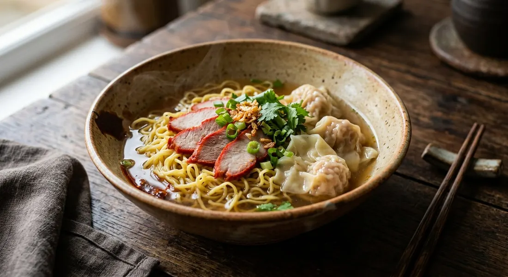

Egg noodles and hand-folded wontons in a clear pork-bone broth, crowned with red barbecue pork — the noodle bowl that anchors every Thai street-side stall, from breakfast to last orders.

บะหมี่เกี๊ยว is a dish assembled, not just cooked: there is the บะหมี่ — fresh yellow egg noodles; the เกี๊ยว — wontons, folded by hand around a pork filling; and the หมูแดง — char siu, the red barbecue pork that gives the bowl its sweetness and its colour. The fourth element, the broth, is the quiet one: pork bones simmered with coriander root, garlic and peppercorns, the same aromatic trinity (สามเกลอ) that seasons the filling.
Thai sources treat it as a Chinese-Thai dish — KRUA.CO's dry version is explicitly built on Cantonese wonton wrappers and Cantonese egg noodles — but the bowl as sold in Thailand is its own thing: generous, sweet-edged, and finished with fried garlic rather than the Cantonese scallion oil. The Wongnai cook ปีศาจหมู notes it can be served three ways from one pot: as soup, dry (haeng), or tom yum.
The stall version is also a family version. Every source here makes it at home, and the honest message in all of them is that the parts are simple; what takes time is the broth and the char siu. Do those well and the assembly is ten minutes.
| Thai | English | Amount |
|---|---|---|
| บะหมี่ไข่ | Fresh egg noodles | 400 g |
| แผ่นเกี๊ยว | Wonton wrappers | 1 pack |
| หมูสับ | Minced pork | 200 g |
| กุ้งสับ | Minced prawns | 100 g |
| รากผักชี | Coriander roots | 2 |
| กระเทียม | Garlic | 1 tbsp |
| พริกไทยเม็ด | White peppercorns | 1 tsp |
| ซีอิ๊วขาว | Light soy sauce | 1 tbsp |
| แป้งข้าวโพด | Cornflour | 1 tsp |
| ผักกวางตุ้ง | Choy sum, cut short | 100 g |
| หมูแดง | Char siu (red barbecue pork), sliced | 1 piece |
| น้ำซุปหมู | Pork broth (bones, coriander root, garlic, peppercorns) | 1.5 litres |
| กระเทียมเจียว | Fried garlic, spring onion, ground white pepper | to finish |
The dry bowl (KRUA.CO): 6 Cantonese wonton wrappers, 2×45 g Cantonese egg noodle cakes, 40 g choy sum, 70 g sliced char siu, half a cup of char siu sauce, garlic oil for tossing, and fried garlic, crispy pork fat and spring onion on top — served with the pork-bone broth on the side and the full condiment tray (pickled chilli vinegar, fish sauce, sugar, chilli powder). The big-family pot (Pim): 1 kg pork neck for the char siu, 250 g fatty minced pork for 45–50 wontons, and a 7-litre broth from pork knuckle bones with white radish, pickled garlic and rock sugar. The three-way pot (Wongnai UGC): pork, prawn or crab fillings, folded golden-cup style, served as soup, dry, or tom yum with chilli jam and crushed peanuts.
The wonton filling. Wongnai's Arunaa, Pim and KRUA.CO use pork alone — Pim's is fatty minced pork with sesame oil and iced water, KRUA.CO's adds pork belly, pork fat and spring onion, Cantonese style. Kapook goes pork and prawn (200 g pork to 100 g prawn), and the Wongnai UGC cook offers pork, whole prawn or crab. Everyone keeps the same seasoning base: coriander root, garlic, white pepper, light soy.
The char siu. Three roads to the same red pork. Kapook: the full classic — cinnamon, star anise, honey, tomato sauce, marinated three to four hours, simmered, then oven-finished. Wongnai's Arunaa: a quick home version — salt, pepper, sugar, oyster sauce, chilli sauce and red colouring, marinated one to two hours, boiled, then ten minutes at 200°C. Pim: a ready-made char siu marinade thinned with evaporated milk, marinated 24–48 hours. The Wongnai UGC cook skips char siu entirely and serves the bowl without it.
The broth. Bones, coriander root, garlic and peppercorns is the common base. Pim scales it up to a stall-sized 7 litres and adds white radish and pickled garlic; KRUA.CO and Pim both add rock sugar (น้ำตาลกรวด) for the soft sweetness; the Wongnai UGC cook prefers it nearly bare — salt, a little sugar, and only a splash of soy, to keep the broth clear and pale.
Wet or dry. KRUA.CO is the only source that serves the bowl exclusively dry — noodles and wontons tossed in garlic oil with char siu and sauce on top, the broth alongside as a drink. The rest ladle the soup over the noodles. The Wongnai UGC cook simply makes one pot and serves it all three ways: soup, dry, or tom yum with chilli jam, crushed peanuts, chilli powder, lime, sugar and fish sauce.
This recipe is translated from the following Thai-language sources. Where they disagree, we've said so.
1. Wongnai — "แจกสูตรฟรี บะหมี่เกี๊ยวหมูแดง" by อรุณา (the quick home char siu and the bowl used here) — wongnai.com
2. ครัวบ้านพิม (Pim) — "บะหมี่เกี๊ยวหมูแดง" (the stall-scale broth with white radish and pickled garlic; the wonton filling with iced water) — pim.in.th
3. KRUA.CO — "บะหมี่เกี๊ยวแห้งหมูแดง" (the dry Cantonese-style bowl, garlic oil and the condiment tray) — krua.co
4. Kapook Cooking — "บะหมี่เกี๊ยวหมูแดง เสิร์ฟร้อน ๆ อร่อยเต็มอิ่ม" (the classic five-spice char siu; the pork-and-prawn filling) — cooking.kapook.com
5. Wongnai — "สูตร บะหมี่เกี้ยว" by ปีศาจหมู (the golden-cup fold, the three-way serving, the clear-broth rule) — wongnai.com